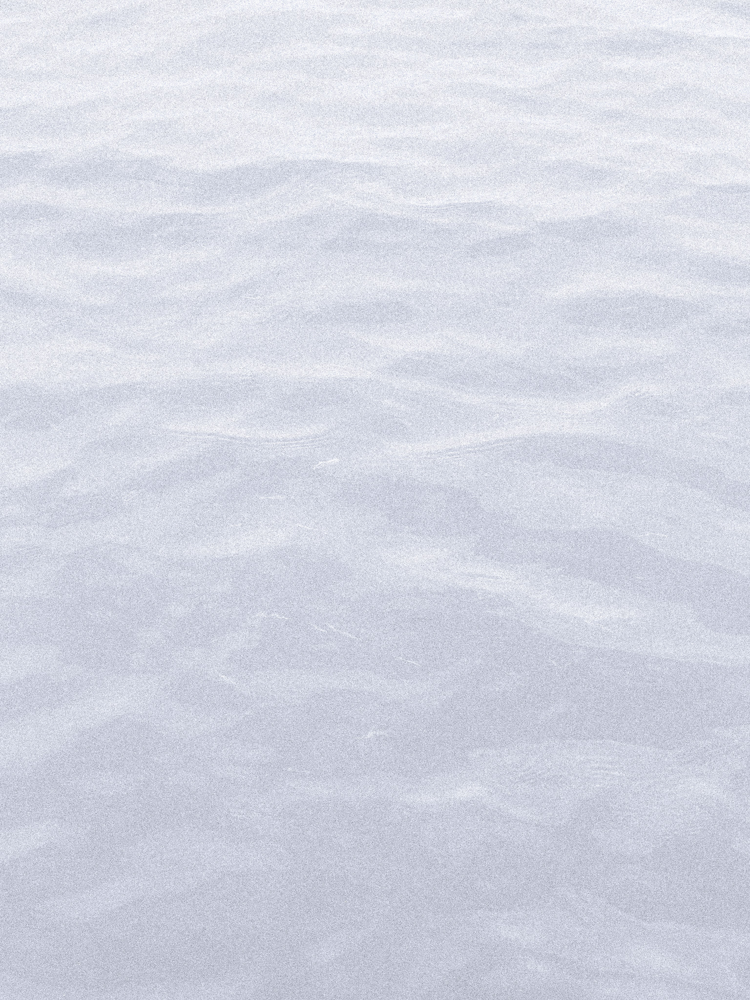
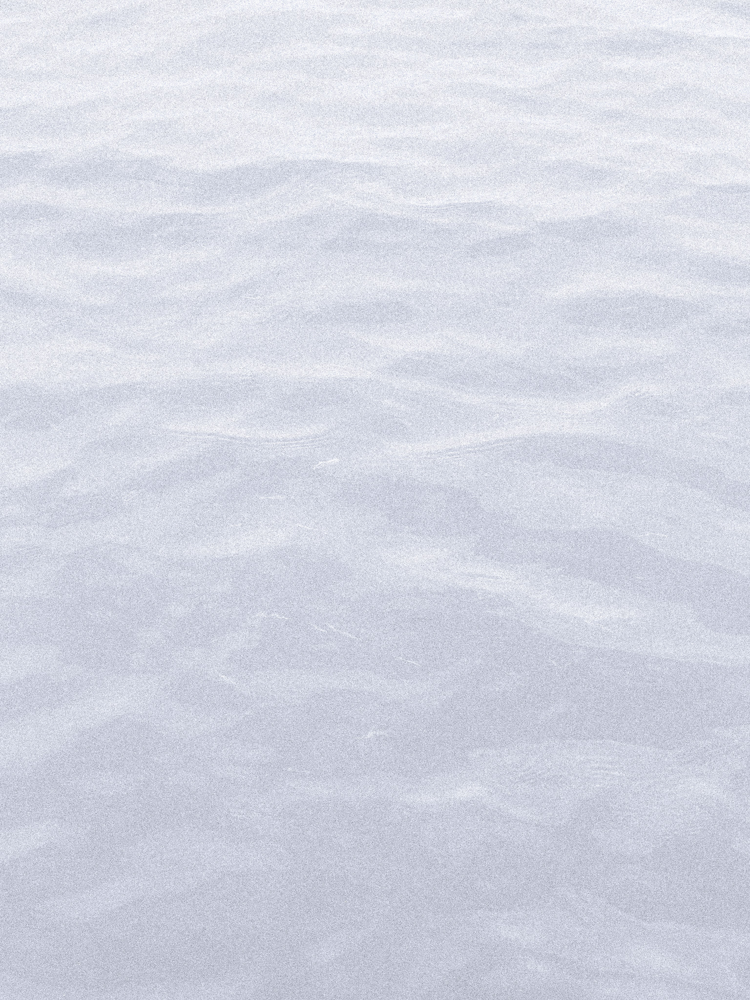

wp_25xx_fmph
Waves. Waves.

"You have twice visited a small island in Japan named Sagishima. As you step foot on Sagishima,
you will recognize the wisdom of the elders, the hopes of the youth, but not conflicts of your
contemporaries.
The sea shimmers. Waves, across waves, striking waves, sending back
waves, waves, that
you in dreams all images shimmers, refracts, strikes and mirrors.
Sagishima is a
secluded respite. Your
stay in brief, never exceeding your welcome. You take your leave as you dip your toes into the
water. The freeze of the sea cannot penetrate your regained
fortitude.
You wade further, and further, pushing across waves, striking waves, sending
back waves, further, until your head no longer feels the air, your feet far removed from the
sand-mud. In the water,
infinite instances of you begin to shimmer, refract, strike and mirror—actions and
reactions, causes and effects, all that is assumed logical dissolves into the sea that defines
your
sanctuary, Sagishima."
 

I have a particular love for Sagishima, and I wish to remember it somehow through my favorite medium of photography. This collection of photos can be viewed as documentary in nature, but also as an expression of my emotions when I lived on the island. Waves pushing waves, receiving replies through echoes, and I too, one day, will return to Sagishima, as if I never left.